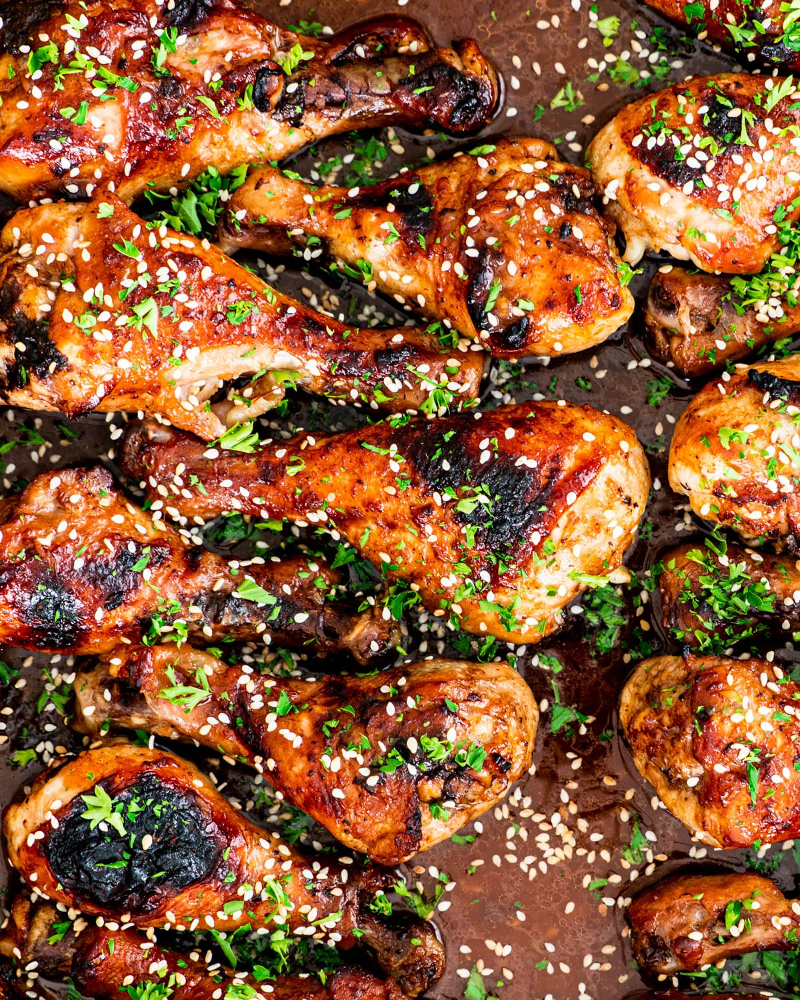

Korean Chicken

Essential for bulking, chicken provides the body with a substantial amount
of protein and comfort.
To avoid burnout while achieving your fitness goals, let's learn how to
prepare a tasty, nutritious rendition on chicken: korean bbq chicken.
Ingredients:
Sauce:
- 1/4 cup soy sauce low sodium
- 1/4 cup honey
- 1 tablespoon olive oil
- 2 teaspoon sesame oil
- 1 tablespoon mirin
- 1 tablespoon sriracha
- 4 cloves garlic minced
- 1 tablespoon ginger fresh, minced
Chicken:
- 4 pounds chicken drumsticks
- 1 tablespoon sesame seeds
- 1 tablespoon cilantro/parsley chopped
Directions:
- Preheat the oven to 375 F °.
Make the sauce:
-
Mix the soy sauce, sriracha, garlic, ginger, honey, sesame oil, olive
oil, and rice wine vinegar in a bowl and set aside.
Bake the chicken:
-
Place the chicken in a large baking dish and pour the sauce over each
piece. Flip the pieces to ensure they're fully covered in sauce. Bake
for 20 minutes, brush or baste the chicken with the sauce from the pan,
then bake for another 15 to 20 minutes or until the thickest piece
registers 165F degrees in the middle.
Garnish:
-
Sprinkle the chicken generously with sesame seeds and chopped cilantro.
Let the chicken rest for 5 minutes before serving.